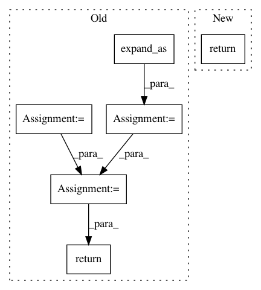

3c761ba9d857677efb60ae5c2dbbe321f0b3b702,allennlp/nn/util.py,,last_dim_softmax,#Any#Any#,305
Before Change
:func:`masked_softmax`, then put the tensor back in its original shape.
tensor_shape = tensor.size()
reshaped_tensor = tensor.view(-1, tensor.size()[-1])
if mask is not None:
while mask.dim() < tensor.dim():
mask = mask.unsqueeze(1)
mask = mask.expand_as(tensor).contiguous().float()
mask = mask.view(-1, mask.size()[-1])
reshaped_result = masked_softmax(reshaped_tensor, mask)
return reshaped_result.view(*tensor_shape)
def weighted_sum(matrix: torch.Tensor, attention: torch.Tensor) -> torch.Tensor:
After Change
assume the tensor has shape ``(batch_size, ..., sequence_length)`` and that the mask (if given)
has shape ``(batch_size, sequence_length)``.
return _last_dimension_applicator(masked_softmax, tensor, mask)
def last_dim_log_softmax(tensor: torch.Tensor, mask: Optional[torch.Tensor] = None) -> torch.Tensor:
In pattern: SUPERPATTERN
Frequency: 3
Non-data size: 6
Instances
Project Name: allenai/allennlp
Commit Name: 3c761ba9d857677efb60ae5c2dbbe321f0b3b702
Time: 2017-11-13
Author: markn@allenai.org
File Name: allennlp/nn/util.py
Class Name:
Method Name: last_dim_softmax
Project Name: pyprob/pyprob
Commit Name: 0cc04fcc2df0b2005de354a602c9a16821fa4b2f
Time: 2018-04-08
Author: atilimgunes.baydin@gmail.com
File Name: pyprob/nn.py
Class Name: ProposalPoisson
Method Name: forward
Project Name: cornellius-gp/gpytorch
Commit Name: 1c9ed4232fcd99f35ab3fef1cf579ba1f6f12645
Time: 2017-11-13
Author: gpleiss@gmail.com
File Name: test/examples/simple_gp_classification_test.py
Class Name: GPClassificationModel
Method Name: forward